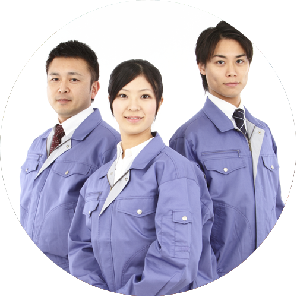
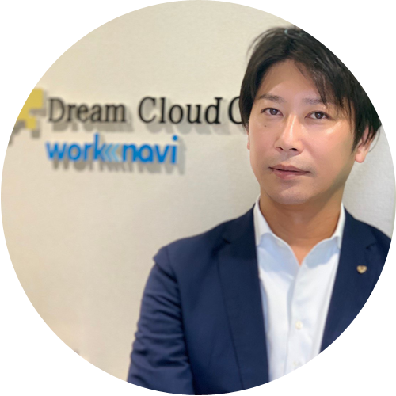
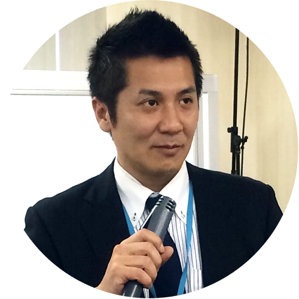
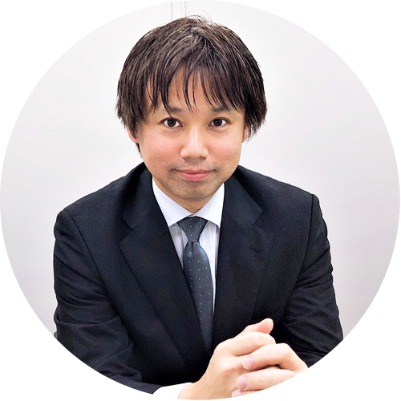
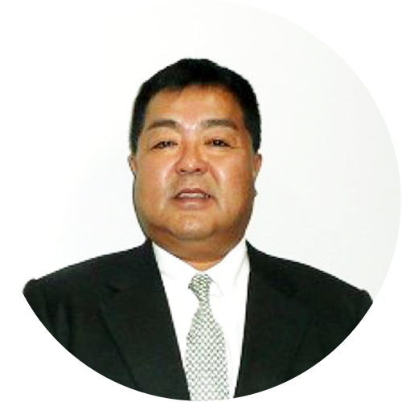
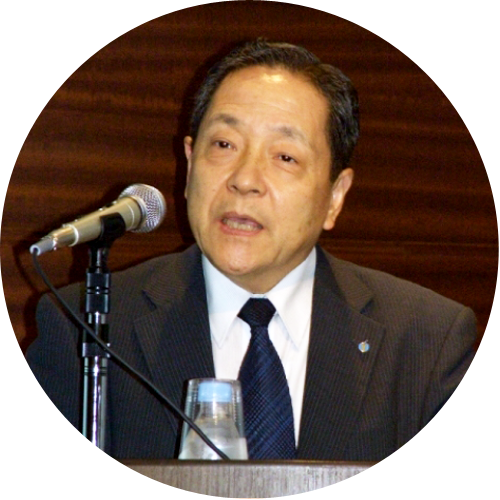
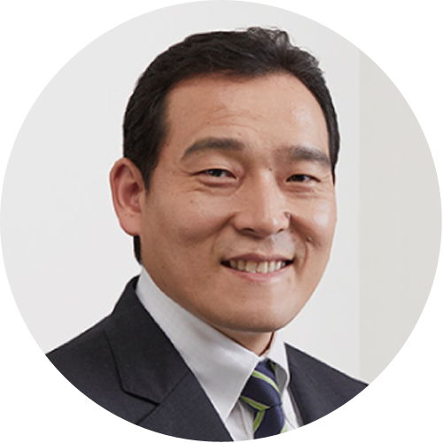

ハノイ工科大学と連携！優秀な若手エンジニア採用をサポートします
ベトナムにおいて理工系最高峰の国立大学であるハノイ工科大学（HUST）と連携し、優秀な若手エンジニアと日本企業のマッチングをサポート。
日本企業として唯一、同大学内に日本就職センター（NAVIGATE JAPAN）を置き、緊密なパートナーシップを築いています。
技術系人材の不足を解消
2018年のdoda転職求人倍率レポートによると、技術系職種の求人倍率は約9倍との結果が出ています。
従業員30名以下の中小企業においては、求人倍率30倍とも言われています。
また、若い技術者の東京一極集中により、地方の中小企業は慢性的な人手不足に。
それなら、発展めざましいアジアへ目を向けてみませんか。
特に、日本に先行してプログラミングが義務教育化されたベトナムでは、理系の人材育成が盛んです。
専門知識と明確な将来ビジョンを持った国際性豊かな若手エンジニアをご紹介します。
正社員として長期就業！双方にとって安心の採用サポートです
-
ハノイ工科大学と連携
理系最高峰であるハノイ工科大学内に日本で初めてキャリアセンターを設立。優秀な学生や卒業生に直接アプローチすることができます。
-
正社員雇用
ベトナムの各大学と連携し、長期就業希望の正社員雇用を促進しています。技能実習生や人材派遣と異なり、長期日本滞在が可能です。
-
就労ビザ取得サポート
弊社で行政書士資格者を雇用しております。また、1万件以上の就労ビザ申請を担当した国際行政書士事務所と連携し、様々な問題を解決します。
-

採用後保証制度
弊社では長期就業希望の正社員雇用を促進しておりますが、万が一採用者が退職してしまった場合は、無料再紹介制度をご利用頂けます。
-
分割払いOK
人材業界初！提携信販会社により、1人当たり月々約3万円～分割払いが可能です。
-
掲載無料
理系外国人採用サイト「work navi ワークナビ」へ無料で掲載！完全成果報酬型のため、リスクゼロでご利用頂けます。
※理系中小企業支援実績市場調査～働き方改革協会調べ
お取引先500社以上
紹介採用実績年間1,000人以上
技術に国境はない。日本で就職にトライ
- 機械エンジニアや電気工事技術者、製造エンジニアとして日本で働きたい。
- ベトナム語、日本語、英語など語学を活かした仕事がしたい。
- 日本で正社員として安定した仕事に就きたい。
- ベトナム人エンジニア採用実績のある会社で安心して働きたい。
私たちが責任を持ってご対応致します
-

代表取締役 加藤 侑
KATO YU1978年三重県生まれ。早稲田大学中退。
某東証1部企業を経て2003年起業し不動産業、みどり証券（現：日本クラウド証券株式会社）を経て、現在に至る。
理工系最高峰ハノイ工科大学内にキャリアセンター（日本就職相談センター）を日本企業として唯一開設し、優秀なエンジニアを日本 につなぎ、プロシニア日本人をベトナムに派遣すること（双方向ヒューマンＲサービス）に集中している。
年間40以上の取材・講演・コラム執筆を行い「経済界」にて独自の視点でコラムを連載。
2016年注目企業に選出。
メディアに「朝まで生テレビ」など。 -

佐藤 拓
SATO TAKU1975年神奈川県生まれ。東京理科大学大学院卒業。
日本電気株式会社にてプログラマーとしてキャリアを積んだ後、人材業界へ転職。
2006年にクリエイター派遣会社を起業し一定の成果を得る。
その後、日本の労働人口減少問題解決の為、東証1部某大手人材派遣会社にて外国人エンジニアの採用・派遣に従事。
中国・フィリピンなどの優秀で若いエンジニアに日本で活躍してもらうノウハウを学び、2017年アットナビジャパンへ入社。
現在、部長職として従業員管理及び大手法人窓口を担当。 -

髙木 裕也
TAKAGI YUYA1979年福島県生まれ。千葉大学法経学部法学科卒業。
大手中学受験塾の個別指導部門を経て、2018年アットナビに入社。
現在入管(ビザ関連)業務及び総務を担当し、優秀なベトナム人と人手不足に困っている中小企業企業のために奮闘する日々を送っている。
特技、趣味はフルート、クラシック音楽鑑賞。高校時代には全日本吹奏楽コンクール全国大会にも出場。大学時代は指揮法を学び、楽団で指揮者の経験もつむ。仕事もプライベートも全力でがモットー。
2008年行政書士資格取得。その他数学検定準1級合格など。 現在、本社にて入管業務手続きサポートを担当。 -

取締役 中村 元彦
NAKAMURA MOTOHIKO1959年生まれ。
1982年2月ユニー入社。
2004年9月株式会社サークルＫサンクス執行役員マーケティング本部長。
2005年5月同社取締役、マーケティング本部長。
2007年3月同社取締役、営業統括本部長。
2007年5月ユニーHDグループ代表取締役社長。
2017年5月退任し、アットナビ取締役就任（現任）。 -

社外取締役 中島 義雄
NAKAJIMA YOSHIO東京出身。東京大学法学部卒業後、大蔵省に入省。
新潟県三条税務署長、国税庁調査査察部査察課課長補佐、銀行局特別金融課課長補佐、大臣官房秘書課兼文書課課長補佐、主計局主査、内閣総理大臣秘書官(海部総理、宮沢総理)主計局次長、財政金融研究所長などを務めたのち退官。
京セラ理事、京セラミタ代表取締役専務、京セラ北京首席代表、船井電機㈱副社長などを経て、セーラー万年筆代表取締役に就任。
2017年セーラ万年筆退任後、TBグループ(東証二部)社外取締役に就任(現任)。
2017年財団法人日本価値協創機構特別顧問(現任)。
2017年9月アットナビ社取締役に就任。 -
最高顧問兼相談役 藤島 安之
FUJISHIMA YASUYUKI1947年新潟県生まれ。東京大学法学部を卒業後、経済産業省に入省。
外務省在スペイン日本国大使館一等書記官、パナマ共和国全権大使などを歴任。
双日株式会社代表取締役副社長などを経て、日本・パナマ企業交流会事務局長やベトナムものづくり人材育成調査委員会委員長、(社)外国人材支援機構理事長現任。 -

特別顧問 糸川 まさあき
ITOKAWA MASAAKI元衆議院議員。元厚生労働省政務官。笹川堯事務所秘書。自民党参議院比例代表（全国区）支部長。公益財団法人全日本空手連盟理事。公益財団法人マリンスポーツ財団評議員。
働き方改革の推進を経営者の視点と労働者の視点とで進める。行政を経験した立場から様々な貴重なアドバイスを実施。